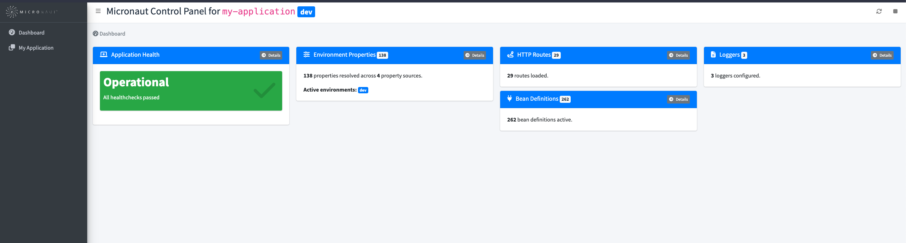

Micronaut Control Panel
The Micronaut Control Panel module provides a web UI that allows you to view and manage the state of your Micronaut application, typically in a development environment.
Version: 2.0.0-SNAPSHOT
1 Introduction
The Micronaut Control Panel module provides a web UI that allows you to view and manage the state of your Micronaut application, typically in a development environment.
2 Release History
For this project, you can find a list of releases (with release notes) here:
3 Quick Start
To get started, add the UI module as a runtime dependency:
developmentOnly("io.micronaut.controlpanel:micronaut-control-panel-ui")<dependency>
<groupId>io.micronaut.controlpanel</groupId>
<artifactId>micronaut-control-panel-ui</artifactId>
<scope>provided</scope>
</dependency>Then, add the control panel modules that you want. For example, if you already have the
io.micronaut:micronaut-management module, you can add the micronaut-control-panel-management module:
developmentOnly("io.micronaut.controlpanel:micronaut-control-panel-management")<dependency>
<groupId>io.micronaut.controlpanel</groupId>
<artifactId>micronaut-control-panel-management</artifactId>
<scope>provided</scope>
</dependency>By default, the Control Panel is only enabled in the dev or test environments. You can change this and other settings
in your configuration file:
| Property | Type | Description | Default value |
|---|---|---|---|
|
boolean |
Enables/disables the control panel module. Default value: "true". |
true |
|
java.util.Set |
Configures the environments where the control panel module is enabled. By default, it is only enabled in the "dev" and "test" environments. |
dev,test |
|
java.lang.String |
Configures the path where the control panel can be accessed. Default value: "/control-panel". |
/control-panel |
|
boolean |
Whether to print the Control Panel URL in the logs on application startup. Default: StringUtils.TRUE |
true |
Therefore, make sure you activate the appropriate environments when running locally, for example, using default environments:
# For Maven:
MICRONAUT_ENVIRONMENTS=dev ./mvnw mn:run
# For Gradle:
MICRONAUT_ENVIRONMENTS=dev ./gradlew runOnce the application is running, you can access the control panel at http://localhost:8080/control-panel.
4 Available Control Panels
All Control Panels are configurable with the following properties:
| Property | Type | Description | Default value |
|---|---|---|---|
|
boolean |
Sets whether this control panel is enabled or not. |
|
|
int |
Sets the order of this control panel, since they will be displayed sorted by order. |
|
|
java.lang.String |
Sets the title of this control panel. |
|
|
java.lang.String |
Sets the icon of this control panel. |
|
|
java.lang.String |
Sets the unique name of the control panel. Can be used in URLs. |
For example, to disable the routes control panel, set the property
micronaut.control-panel.panels.routes.enabled to false.
Beyond displaying the available panels, the control panel also allows to perform 2 additional actions, provided that the corresponding endpoints are enabled and non-sensitive:
-
Refresh: refreshing the application will cause all
@Refreshablebeans in the context to be destroyed and re-instantiated upon further requests. This requires the Refresh Endpoint to be enabled and non-sensitive. -
Stop: will shut down the application. This requires the Stop Endpoint to be enabled and non-sensitive.
Micronaut Endpoints require having the io.micronaut:micronaut-management dependency on the classpath.
|
4.1 Built-in
The following control panels are available by default with the UI module:
-
routes: displays information about the available HTTP routes.
4.2 Cache
The Cache control panel provides a web-based interface for managing caches in Micronaut applications supported by the Micronaut Cache module.
To add the Cache control panels, add the following dependency:
developmentOnly("io.micronaut.controlpanel:micronaut-control-panel-cache")<dependency>
<groupId>io.micronaut.controlpanel</groupId>
<artifactId>micronaut-control-panel-cache</artifactId>
<scope>provided</scope>
</dependency>This module automatically creates panels for each configured cache in your application. Each panel provides:
-
A count of cached objects (displayed as a badge)
-
Detailed cache information and configuration metadata
-
A table listing all cached key-value pairs
-
Cache management operations (invalidate individual keys or clear entire cache)
The control panel supports all cache implementations provided by Micronaut Cache:
-
Caffeine - High-performance Java caching library
-
Ehcache - Enterprise-grade caching solution
-
Hazelcast - Distributed caching with clustering capabilities
-
Infinispan - Distributed in-memory data grid
Cache Management Operations
Each cache panel includes interactive buttons to manage cache contents:
-
Invalidate all keys: Clears the entire cache by removing all stored entries
-
Invalidate: Removes individual cache entries by key
These operations are performed via REST endpoints and provide immediate feedback on success or failure.
Configuration
The cache control panel is automatically enabled when you include the control-panel-cache module in your project. You can disable it by setting:
micronaut.control-panel.cache.enabled=falsemicronaut:
control-panel:
cache:
enabled: false[micronaut]
[micronaut.control-panel]
[micronaut.control-panel.cache]
enabled=falsemicronaut {
controlPanel {
cache {
enabled = false
}
}
}{
micronaut {
control-panel {
cache {
enabled = false
}
}
}
}{
"micronaut": {
"control-panel": {
"cache": {
"enabled": false
}
}
}
}Individual cache panels can also be disabled by setting the cache-specific property:
micronaut.caches.my-cache.control-panel.enabled=falsemicronaut:
caches:
my-cache:
control-panel:
enabled: false[micronaut]
[micronaut.caches]
[micronaut.caches.my-cache]
[micronaut.caches.my-cache.control-panel]
enabled=falsemicronaut {
caches {
myCache {
controlPanel {
enabled = false
}
}
}
}{
micronaut {
caches {
my-cache {
control-panel {
enabled = false
}
}
}
}
}{
"micronaut": {
"caches": {
"my-cache": {
"control-panel": {
"enabled": false
}
}
}
}
}Cache Information Display
The detailed view of each cache shows:
-
Implementation Class: The underlying cache implementation
-
Cache Size: Current number of entries in the cache
-
Configuration Details: Implementation-specific settings (for Caffeine, Ehcache, Infinispan)
-
Cache Contents: Table of all key-value pairs currently stored
This provides complete visibility into your application’s caching layer for debugging and monitoring purposes.
4.3 Management
To add the management panels, include the following dependency:
developmentOnly("io.micronaut.controlpanel:micronaut-control-panel-management")<dependency>
<groupId>io.micronaut.controlpanel</groupId>
<artifactId>micronaut-control-panel-management</artifactId>
<scope>provided</scope>
</dependency>Note that you also need the Management module:
runtimeOnly("io.micronaut.:micronaut-management")<dependency>
<groupId>io.micronaut.</groupId>
<artifactId>micronaut-management</artifactId>
<scope>runtime</scope>
</dependency>The following panels are available:
-
health: Application Health -
env: Environment Properties -
beans: Bean Definitions -
loggers: Logging Configuration
Application Heath
This panel displays the health information of your application, and relies on the Health Endpoint to display its information. Note that, by default, the health endpoint only displays the details to authenticated users. To be able to see the details in the control panel, you need to configure the health endpoint to expose the details to unauthenticated users:
Make sure this is done in an environment-specific configuration file, for example, application-dev.yml.
|
Configuring the Health Endpoint to expose details to anonymous users
endpoints.health.details-visible=ANONYMOUSendpoints:
health:
details-visible: ANONYMOUS[endpoints]
[endpoints.health]
details-visible="ANONYMOUS"endpoints {
health {
detailsVisible = "ANONYMOUS"
}
}{
endpoints {
health {
details-visible = "ANONYMOUS"
}
}
}{
"endpoints": {
"health": {
"details-visible": "ANONYMOUS"
}
}
}Environment Properties
This panel displays all the configuration properties resolved, and relies on the Environment Endpoint to display all the properties. This endpoint is disabled and sensitive (requires authentication to display the information) by default, so you need to configure it to be enabled and accessible to anonymous users in the environments where the control panel is enabled:
Make sure this is done in an environment-specific configuration file, for example, application-dev.yml.
|
Configuring the Environment Endpoint
endpoints.env.enabled=true
endpoints.env.sensitive=falseendpoints:
env:
enabled: true
sensitive: false[endpoints]
[endpoints.env]
enabled=true
sensitive=falseendpoints {
env {
enabled = true
sensitive = false
}
}{
endpoints {
env {
enabled = true
sensitive = false
}
}
}{
"endpoints": {
"env": {
"enabled": true,
"sensitive": false
}
}
}Also, by default, all the values will be masked. If you want to see the actual configuration values in the control panel, you can enable the built-in filter by setting the following configuration property:
Displaying the actual configuration values
micronaut.control-panel.env.show-values=truemicronaut:
control-panel:
env:
show-values: true[micronaut]
[micronaut.control-panel]
[micronaut.control-panel.env]
show-values=truemicronaut {
controlPanel {
env {
showValues = true
}
}
}{
micronaut {
control-panel {
env {
show-values = true
}
}
}
}{
"micronaut": {
"control-panel": {
"env": {
"show-values": true
}
}
}
}This will show all values apart from those that contain the words password, credential, certificate, key,
secret or token anywhere in their name.
Bean Definitions
This panel displays all the beans, and their relationships, grouped by packages. It relies on the Beans Endpoint to display all the bean definitions. This endpoint is sensitive by default, so if you want to see the bean definitions in the control panel, you need to configure the endpoint to be accessible to anonymous users in the environments where the control panel is enabled:
Make sure this is done in an environment-specific configuration file, for example, application-dev.yml.
|
Configuring the Beans Endpoint
endpoints.beans.sensitive=falseendpoints:
beans:
sensitive: false[endpoints]
[endpoints.beans]
sensitive=falseendpoints {
beans {
sensitive = false
}
}{
endpoints {
beans {
sensitive = false
}
}
}{
"endpoints": {
"beans": {
"sensitive": false
}
}
}Disabled Beans
This panel shows all disabled beans, i.e., beans that have not met any of their requirement conditions. For each disabled bean, you can see the reasons why the bean was not loaded.
Logging Configuration
This panel allows you to view and re-configure the logging levels without restarting the application. It relies on the Loggers Endpoint to display and update the logging levels. This endpoint is disabled by default, so if you want to manage the logging configuration in the control panel, you need to enable the endpoint. Also, by default, the endpoint is read-only, so you need to configure it to be writable:
Make sure this is done in an environment-specific configuration file, for example, application-dev.yml.
|
Configuring the Loggers Endpoint
endpoints.loggers.enabled=true
endpoints.loggers.write-sensitive=falseendpoints:
loggers:
enabled: true
write-sensitive: false[endpoints]
[endpoints.loggers]
enabled=true
write-sensitive=falseendpoints {
loggers {
enabled = true
writeSensitive = false
}
}{
endpoints {
loggers {
enabled = true
write-sensitive = false
}
}
}{
"endpoints": {
"loggers": {
"enabled": true,
"write-sensitive": false
}
}
}4.4 Object Storage
The Object Storage control panel provides a web-based interface for managing files stored in various object storage systems supported by the Micronaut Object Storage module.
Assuming you already have one or more Micronaut Object Storage dependencies, to add the Object Storage panels, add the following dependency:
developmentOnly("io.micronaut.controlpanel:micronaut-control-panel-object-storage")<dependency>
<groupId>io.micronaut.controlpanel</groupId>
<artifactId>micronaut-control-panel-object-storage</artifactId>
<scope>provided</scope>
</dependency>This module automatically creates panels for each configured object storage system in your application. Each panel provides:
-
A count of stored objects (displayed as a badge)
-
Detailed metadata about the storage configuration
-
A table listing all stored objects with their content types
-
File management operations (download, upload, delete)
The control panel supports all object storage systems provided by Micronaut Object Storage:
-
Local Storage - Files stored on the local filesystem
-
Amazon S3 - AWS Simple Storage Service
-
Azure Blob Storage - Microsoft Azure Blob Storage
-
Google Cloud Storage - Google Cloud Platform
-
Oracle Cloud Storage - Oracle Cloud Infrastructure
The control panel is automatically enabled when you include the control-panel-object-storage module in your project. You can disable it by setting:
micronaut.control-panel.panels.object-storage.enabled=falsemicronaut:
control-panel:
panels:
object-storage:
enabled: false[micronaut]
[micronaut.control-panel]
[micronaut.control-panel.panels]
[micronaut.control-panel.panels.object-storage]
enabled=falsemicronaut {
controlPanel {
panels {
objectStorage {
enabled = false
}
}
}
}{
micronaut {
control-panel {
panels {
object-storage {
enabled = false
}
}
}
}
}{
"micronaut": {
"control-panel": {
"panels": {
"object-storage": {
"enabled": false
}
}
}
}
}5 Creating Custom Control Panels
You can add your own control panels to the Control Panel UI. Creating custom panels requires the following:
-
An implementation of the ControlPanel interface.
-
Some configuration values.
-
The views.
The Control Panel UI uses the open-source AdminLTE template, including Bootstrap and Font Awesome.
The categories are used to group the control panels in the UI. Categories are rendered as left side menu items. There is
a default category called Dashboard that is used for all control panels that don’t specify a category.
Control Panel Implementation
The easiest way to implement a custom panel is to extend from AbstractControlPanel. For example:
@Singleton
public class MyApplicationControlPanel extends AbstractControlPanel<MyApplicationControlPanel.Body> { // (1)
private static final String NAME = "my-application"; // (2)
public MyApplicationControlPanel(@Named(NAME) ControlPanelConfiguration configuration) {
super(NAME, configuration); // (3)
}
@Override
public Body getBody() {
return new Body("This is an application-provided control panel. This text is coming from the body.");
}
@Override
public Category getCategory() {
return new Category(NAME, "My Application", "fa-copy", 1); // (4)
}
@ReflectiveAccess // (5)
public record Body(String text){}
}| 1 | The type parameter indicates the object type of the body. You can use your own classes or records to return custom data to the view. |
| 2 | Unique name for your control panel. This is used for the configuration properties prefix. In this case:
micronaut.control-panel.panels.my-application. |
| 3 | Call the parent constructor. You can inject any other beans in this constructor. |
| 4 | The category under which the control panel will be displayed, if other than the default. |
| 5 | Use @ReflectiveAccess for GraalVM Native Image compatibility. |
Check the ControlPanel interface to see the other methods that can be overridden, for example, to display a badge in the control panel header.
Configuration
There are some values for the UI that can be configured:
micronaut.control-panel.panels.my-application.title=My Application Control Panel
micronaut.control-panel.panels.my-application.icon=fa-plug
micronaut.control-panel.panels.my-application.order=10micronaut:
control-panel:
panels:
my-application:
title: My Application Control Panel # (1)
icon: fa-plug # (2)
order: 10 # (3)[micronaut]
[micronaut.control-panel]
[micronaut.control-panel.panels]
[micronaut.control-panel.panels.my-application]
title="My Application Control Panel"
icon="fa-plug"
order=10micronaut {
controlPanel {
panels {
myApplication {
title = "My Application Control Panel"
icon = "fa-plug"
order = 10
}
}
}
}{
micronaut {
control-panel {
panels {
my-application {
title = "My Application Control Panel"
icon = "fa-plug"
order = 10
}
}
}
}
}{
"micronaut": {
"control-panel": {
"panels": {
"my-application": {
"title": "My Application Control Panel",
"icon": "fa-plug",
"order": 10
}
}
}
}
}| 1 | Title to be displayed in the control panel headeer. |
| 2 | Icon class (from Font Awesome) of the control panel. |
| 3 | The order in which the control panel will be displayed in the UI. |
Views
For rendering the views, the Control Panel uses Micronaut Views with Handlebars.java templates.
Each control panel needs to provide 2 views: one for the control panel list, that can contain a summary of the
information to be displayed, and another one for the detailed view. The must be placed in a views/<panel-name> directory
on the classpath, and names body.hbs and detail.hbs, respectively. For example, in the above example:
src/main/resources/views/my-application/body.hbs.<p class="card-text">
This is the body of the application-provided control panel
</p>The ControlPanel instance (MyApplicationControlPanel in this case) is stored on the Handlebars
context, so you can implicitly access its methods and properties. For example, to access the badge:
src/main/resources/views/my-application/body.hbs.<p class="card-text">
<strong>{{badge}}</strong> bean definitions active.
</p>In the case of the detail view, the control panel instance is passed as an implicit controlPanel variable. For example,
to access the body of our control panel example:
src/main/resources/views/my-application/detail.hbs.{{ controlPanel.body.text }}6 Repository
You can find the source code of this project in this repository: